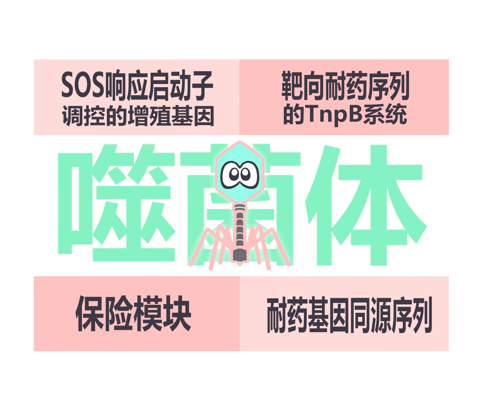
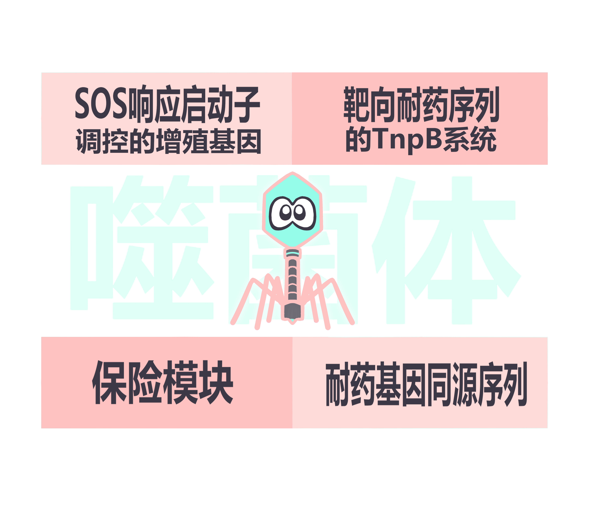
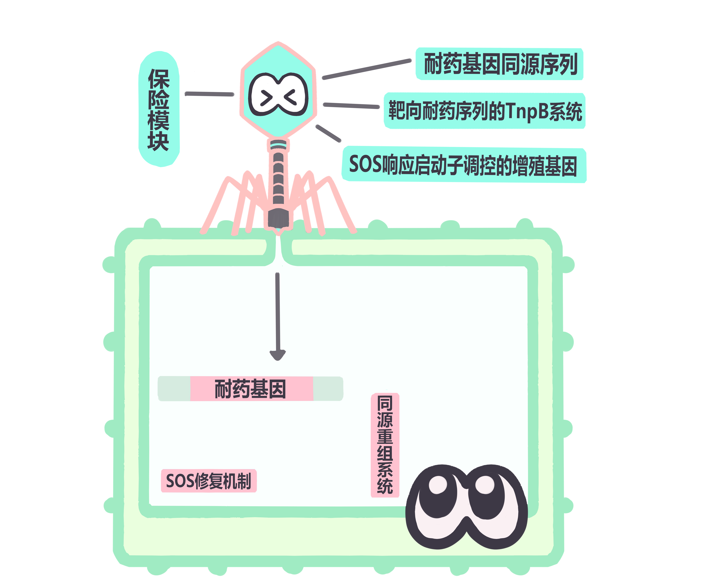
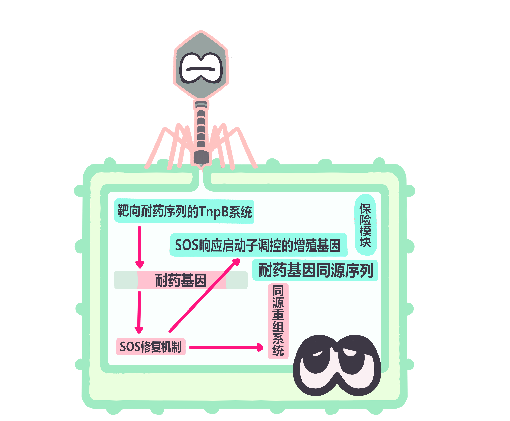
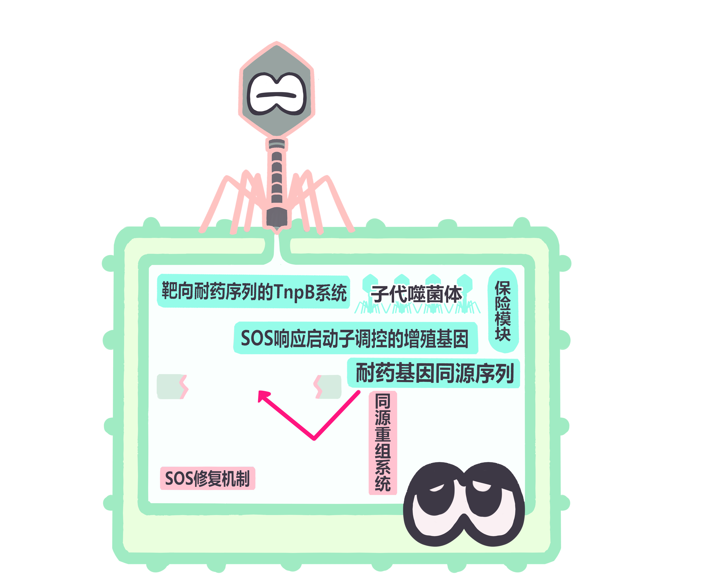
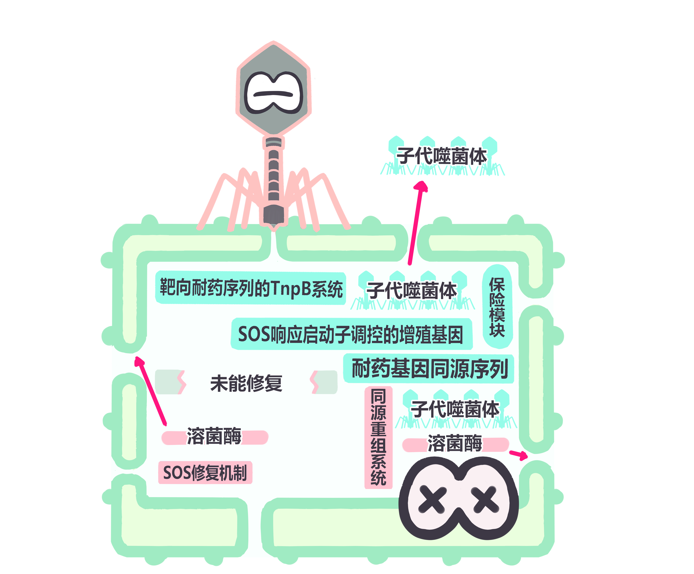
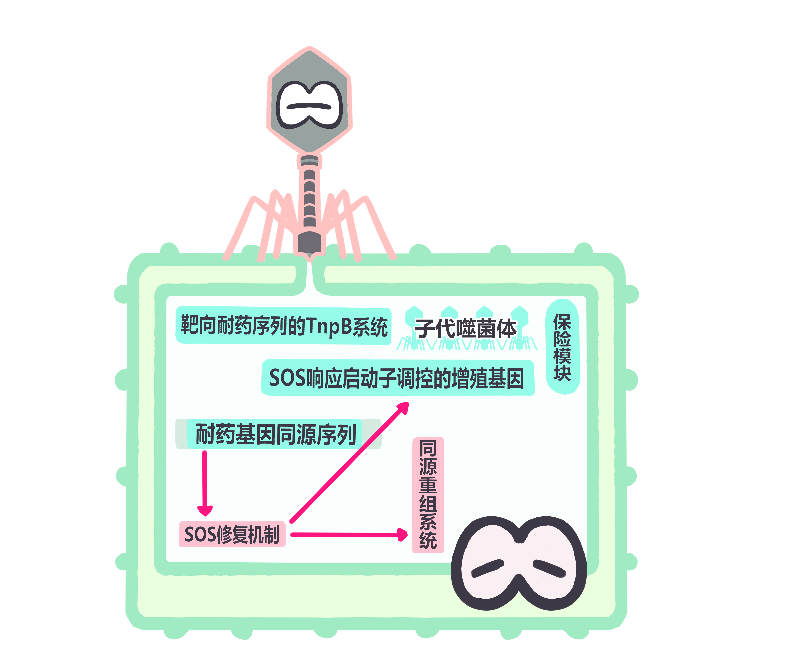

Design

这张图是整个系统的 "装备清单"，展示了改造后噬菌体携带的四个关键功能模块：
- SOS响应启动子调控的增殖基因：像一个"触发式开关"，只有在细菌启动SOS应急修复时才会激活噬菌体增殖。
- 靶向耐药序列的TnpB系统：相当于"基因剪刀"，精准定位并切割细菌的耐药基因。
- 保险模块：是一个"安全备份"，防止意外情况导致系统失效，确保对耐药菌的杀伤效率。
- 耐药基因同源序列：作为"诱饵"，引导后续的同源重组过程，确保耐药基因被精准替换或破坏。

这是整个过程的起点：改造后的噬菌体识别并附着到目标耐药菌的表面，准备注入自己的遗传物质，就像"病毒特工"锁定并准备潜入目标细胞。

噬菌体将携带的所有功能模块基因注入到目标菌内部。此时，细菌内的耐药基因、SOS修复机制和同源重组系统都已准备好与噬菌体的基因"互动"，为后续的基因编辑和增殖做准备。

注入后，几个关键步骤同步启动：
- TnpB系统（基因剪刀）开始精准切割细菌的耐药基因，使其失去功能。
- 被切割的DNA会触发细菌的SOS修复机制，这个信号会激活噬菌体的增殖基因，让噬菌体开始大量复制。
- 耐药基因同源序列与被切割的耐药基因片段结合，引导同源重组系统进一步破坏或替换耐药基因。

在这一步，耐药基因已经被TnpB切割和同源重组彻底破坏，失去了让细菌耐药的能力。同时，被SOS信号激活的增殖基因让噬菌体在菌体内快速复制，产生大量子代噬菌体。

若同源重组序列成功修复，那么细菌的SOS系统暂停，那么噬菌体的增殖将会暂停，"炸弹"将会被拆除，细胞不会裂解死亡，实现了耐药菌的再敏化。

当噬菌体复制到足够数量后，会表达溶菌酶，像"炸弹"一样裂解细菌的细胞壁。被裂解的细菌会释放出大量子代噬菌体，这些新的"病毒特工"会去感染周围更多的耐药菌，开始新一轮的杀菌循环，最终实现对耐药菌群体的精准清除。
核心优势
1. TnpB系统的小体积解决了部分噬菌体因容量过小而无法携带CRISPR系统的问题
2. 噬菌体的对目标细菌的高特异性解决了TnpB系统（或其他基因编辑系统）杀伤非致病菌的问题。
3. 噬菌体受控的增殖能力既能避免无耐药性的细菌被杀死，又能使噬菌体以耐药菌为原料增殖，避免了多次大量给药的麻烦和成本。
4. 噬菌体中不存在类似Anti-CRISPR系统，会阻碍TnpB系统工作的机制。
课题优化方向
（一）抗宿主免疫清除系统：解决噬菌体存活与侵染效率问题
针对噬菌体易被机体免疫清除、细菌易产生抗性的问题，从"规避机体免疫"与"突破细菌防御"两方面设计：
1. 降低噬菌体免疫原性
(1) 基因改造：敲除或突变噬菌体表面高免疫原性蛋白（如衣壳蛋白）的编码基因，保留侵染功能的同时消除抗原位点；
(2) 物理化学修饰：用聚乙二醇（PEG）对噬菌体表面进行偶联修饰，形成保护层，阻断抗体与补体系统识别；
(3) 封装技术：将噬菌体包裹于脂质体、藻酸盐等生物相容性基质中，实现靶向释放，提升感染部位噬菌体浓度。
2. 突破细菌防御屏障
(1) 尾丝蛋白改造：筛选或改造噬菌体尾丝蛋白，使其识别细菌保守性高的替代受体，规避细菌受体突变导致的抗性；
(2) 干扰细菌内部防御：编辑噬菌体基因组，去除易被细菌CRISPR-Cas系统识别的序列，或表达抑制细菌限制性内切酶的蛋白；
(3) 噬菌体鸡尾酒疗法：结合多种不同侵染机制的噬菌体，即使细菌对一种噬菌体耐药，其他噬菌体仍可发挥作用。
（二）演替理论补充：应对双抗菌风险
为验证并落地演替理论，避免双抗菌泛滥，设计三大补充策略：
1. 二次切割系统：针对双抗菌，设计靶向其抗性基因的TnpB系统，通过三种递送方式实现二次编辑——改造原有噬菌体携带两套TnpB系统（分别靶向耐药基因与抗性基因）、用第二种噬菌体递送、或通过电转化/脂质体等非噬菌体方式递送。
2. 代谢脆弱性靶向：利用双抗菌的代谢缺陷（因抗性导致代谢负荷增加），筛选并激活特定启动子触发切割系统，如缺铁响应（pfeA启动子）、缺氧响应（narG启动子）、细胞膜压力响应（baeR启动子），仅在双抗菌代谢脆弱时启动切割。
3. 双信号激活电路：在噬菌体中集成SOS信号与群体感应信号的双激活系统——仅当细菌密度高（群体感应信号强）且耐药基因已被切割（SOS信号激活）时，才启动噬菌体裂解，避免低菌密度时过度裂解导致敏感菌不足，同时可通过外源添加信号分子重新激活系统。
（三）多靶基因同时切割：提升编辑效率与准确性
为避免单一靶基因因突变导致脱靶或逃逸，选择双靶点切割策略：
1. 靶点选择逻辑：以阴沟肠杆菌的blaNDM-1（B类碳青霉烯酶基因，第一靶点）为基础，从A类、D类碳青霉烯酶基因中选择第二靶点——碳青霉烯酶基因在耐药中起支配作用，且类间序列差异大，可降低逃逸概率。
2. 第二靶点筛选标准：与blaNDM-1共携带率高、无细菌管家基因同源序列、选择保守区域、避开调控区；最终选定blaKPC-2（A类），其在中国区域阴沟肠杆菌中携带率最高（13株临床分离株），且与blaNDM-1共携带率高。
（四）扩大疗法适用范围：从"单一靶向"到"广谱适配"
通过四大模块设计，突破原疗法仅针对单一细菌、单一耐药基因的局限：
1. 耐药基因-ωRNA-TAM匹配库：针对临床常见耐药基因（如blaKPC、mcr-1、vanA等），设计对应的ωRNA，筛选并整合不同TAM序列，形成可扩展的匹配库——面对不同耐药菌时，可直接调取对应的ωRNA-TAM组合，实现多耐药基因切割。
2. 宿主菌密码子适配模块：不同细菌存在密码子使用偏好性，外源基因（如TnpB）若与宿主密码子不匹配，会导致翻译效率低、蛋白活性不足；本模块通过基因序列优化，将外源基因的稀有密码子替换为宿主偏好的高频密码子，确保TnpB系统在不同细菌中高效表达。
3. 尾丝蛋白-宿主菌匹配库：收集能识别不同病原菌（革兰氏阳性菌、革兰氏阴性菌）表面受体的尾丝蛋白，与噬菌体载体模块化整合——靶向不同细菌时，仅需更换尾丝蛋白模块，无需更换噬菌体载体，扩大宿主范围。
4. 生物膜干扰系统适配：将生物膜干扰系统与噬菌体疗法协同，通过酶解基质、抑制群体感应等方式破坏生物膜，使噬菌体可高效接触被包裹细菌，提升对生物膜相关感染的治疗效果。
（五）安全模块：双重防线保障生物安全
在原有EL222光控系统基础上，新增环境安全与基因泄露防控设计，形成"双重安全防线"：
1. EL222光控系统（实时人为干预）
(1) 组成：EL222表达盒（弱组成型启动子驱动EL222蛋白表达）、光控阻断元件（SOS启动子下游插入EL222结合位点）；
(2) 机制：暗态下EL222为无活性单体，噬菌体正常增殖；出现不良反应时，450-470nm蓝光照射使EL222二聚化，结合其特异性位点阻断增殖基因转录，停止噬菌体增殖；停止蓝光后，EL222解离，可恢复治疗（可逆性）。
2. 环境与基因安全设计方向
(1) 营养缺陷型改造：敲除噬菌体关键代谢基因（如purA），使其仅能在目标菌（含互补代谢途径）内增殖，泄露到环境后因缺乏代谢物而自然消亡；
(2) 温度敏感型突变：突变噬菌体DNA聚合酶基因，使其仅在人体体温（36-37℃）下活性，避免环境中增殖；
(3) 基因泄露阻断：将TnpB、ωRNA等外源基因与噬菌体必需基因（如衣壳蛋白基因）融合表达，去除外源基因独立启动子/终止子，防止其脱离噬菌体基因组横向转移；同时同源序列设计避开细菌其他基因组区域，避免编辑出错。
课题创新点
1. 技术融合创新：首次将小型化TnpB系统与噬菌体疗法深度融合，解决CRISPR-Cas系统体积大、易受Anti-CRISPR影响的问题，同时通过噬菌体实现精准递送，避免非致病菌误杀。
2. 增殖调控机制创新：将噬菌体增殖与耐药基因切割通过SOS响应关联，形成"切割-响应-增殖"的闭环，既保证杀菌效率，又减少不必要的噬菌体扩散，实现"单次给药"可行性。
3. 抗性应对策略创新：提出"演替理论+二次切割+双信号电路"的多层级抗性应对体系，不仅被动依赖演替，还通过主动编辑双抗菌及精准调控裂解时机，全面避免双抗菌泛滥。
4. 安全设计创新：构建"EL222光控系统+营养缺陷/温度敏感/基因泄露阻断"的双重安全防线，既实现实时人为干预，又通过固有特性防止环境扩散与基因污染，兼顾临床与生态安全。
5. 适用范围扩展创新：通过四大适配模块（耐药基因-ωRNA-TAM库、密码子适配、尾丝蛋白库、生物膜干扰），使疗法从"单一细菌-单一耐药基因"扩展为"广谱细菌-多种耐药基因"，临床应用价值更高。
课题局限性与展望
（一）局限性
1. 临床转化瓶颈：噬菌体疗法的药代动力学复杂，目前仅能作为"同情疗法"使用，缺乏大规模临床案例验证，且监管标准不明确，临床推广难度大。
2. 靶向范围局限：当前研究仅针对耐碳青霉烯阴沟肠杆菌的blaNDM-1基因，对其他耐药基因或细菌的改造可能面临未知阻碍（如密码子偏好差异、尾丝蛋白不匹配）。
3. 实验验证缺失：课题目前处于理论与实验设计阶段，未开展实际实验，可能存在实验室操作层面的问题（如酵母重组效率低、工程噬菌体活性不足）。
4. 演替理论不确定性：演替理论尚未经实验验证，双抗菌的实际代谢负担、敏感菌的竞争优势可能与理论预期存在差异，需更多实证数据支撑。
（二）未来展望
1. 非体内应用场景拓展：优先在医院环境消毒、食品加工等非体内场景应用，回避人体内噬菌体监管限制，如通过工程噬菌体消除环境中耐药菌，从源头减少感染风险。
2. 模块化与标准化：提升疗法的模块化程度，如开发"尾丝蛋白快速更换模块""ωRNA定制库"，实现靶向目标的快速切换，同时建立工程噬菌体的制备与质控标准，推动产业化。
3. 利用噬菌体自身酶系统：探索T7样噬菌体自身的endo1酶的靶向编辑潜力——endo1可切割不完全配对DNA，若与γPNA联用可赋予序列特异性，无需外加基因编辑系统，简化噬菌体改造流程。
4. 基因组精简优化：通过酵母平台删除噬菌体非必需基因（如部分调控基因、冗余结构基因），构建更小基因组的工程噬菌体，为外源元件（如多靶标TnpB系统）插入留出更多空间，提升多功能性。
5. 多学科协同：联合临床医生、药代动力学专家与监管机构，开展小规模临床试验，积累临床数据，推动噬菌体疗法的监管标准建立，加速临床转化。